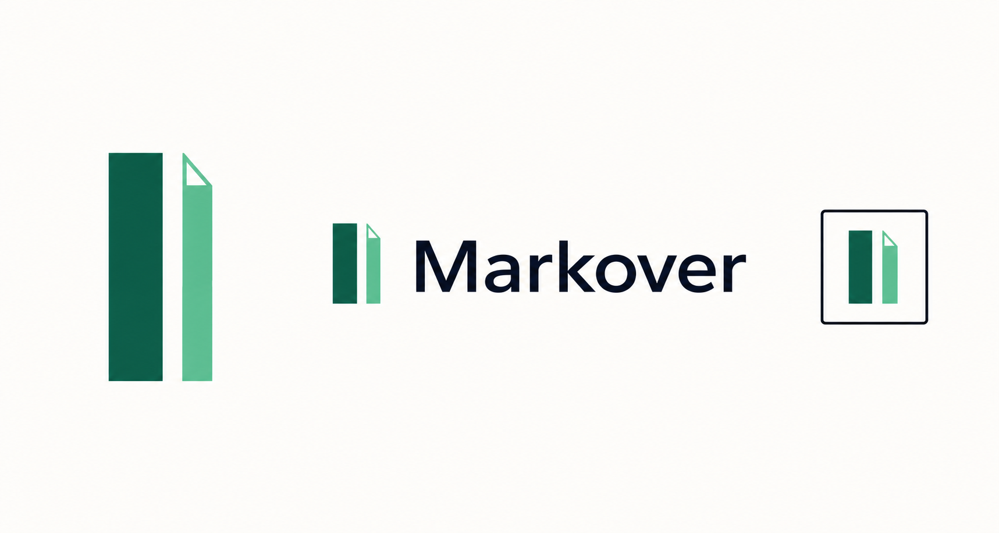
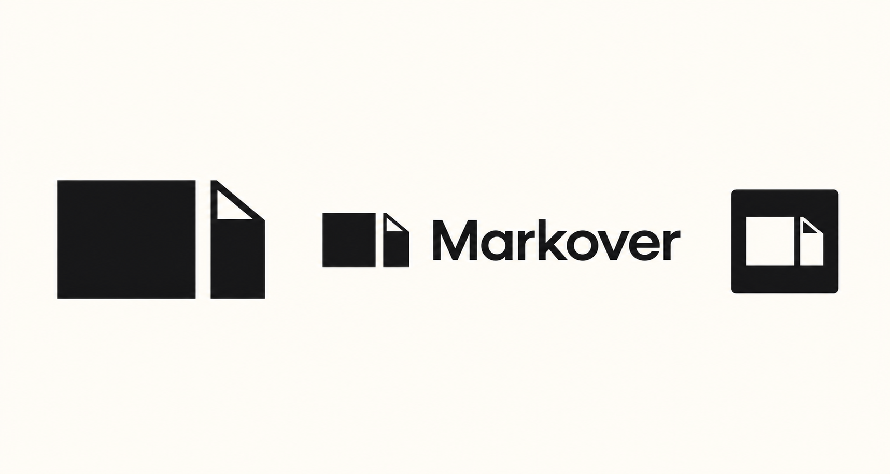
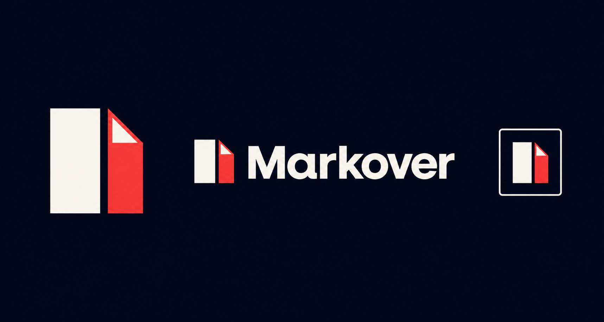

Original 03
Original 03
01
Original Swiss panes
- Cobalt + red
- Tall 1:1 panes
- Bold geometric sans
The winning Swiss panes direction, followed by seven close relatives exploring color, proportion, corner geometry, and typography. Select any board for its full-resolution image.
Original 03




